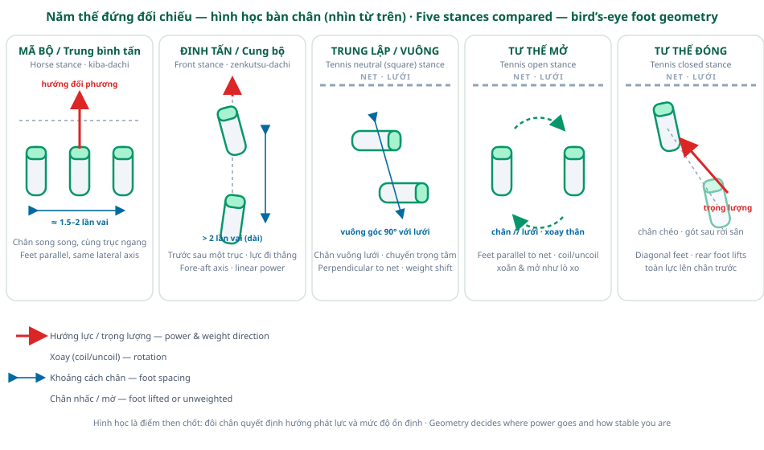
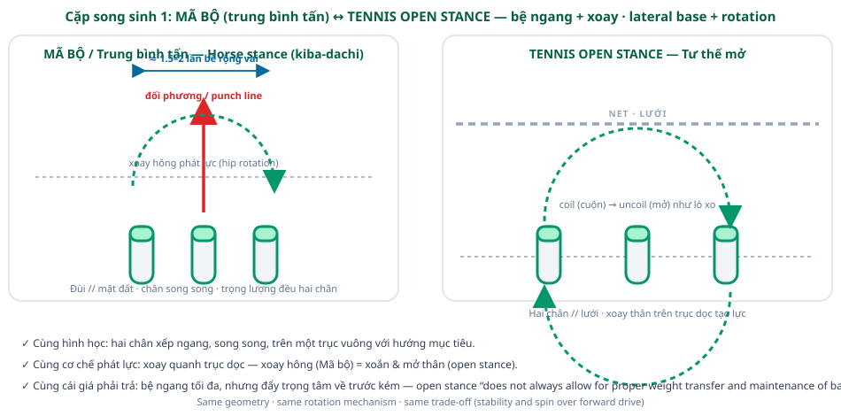
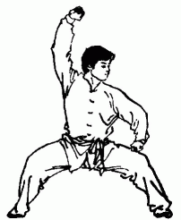
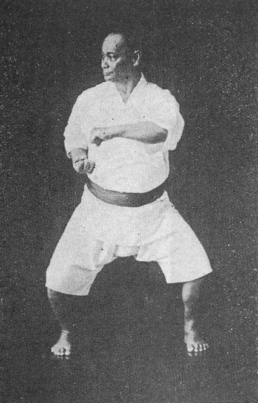
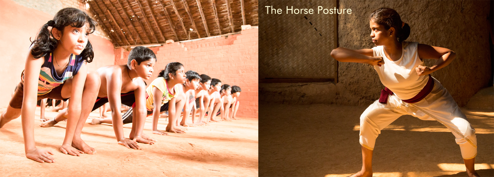
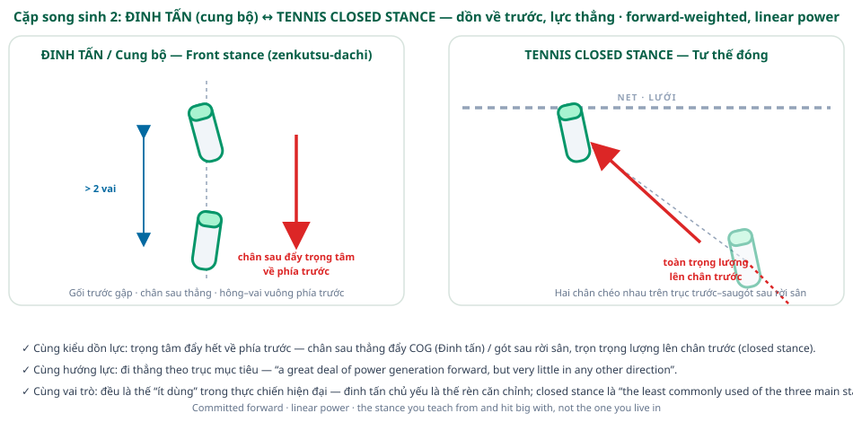
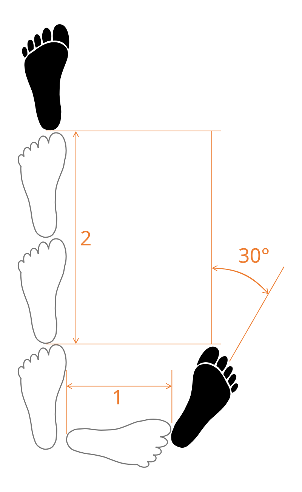
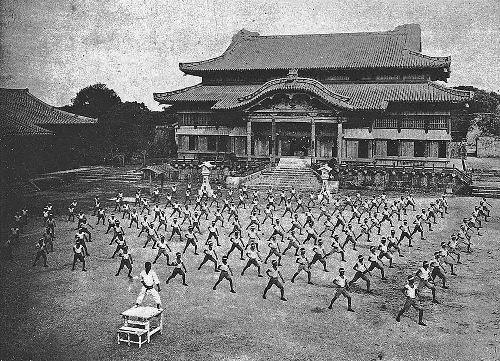
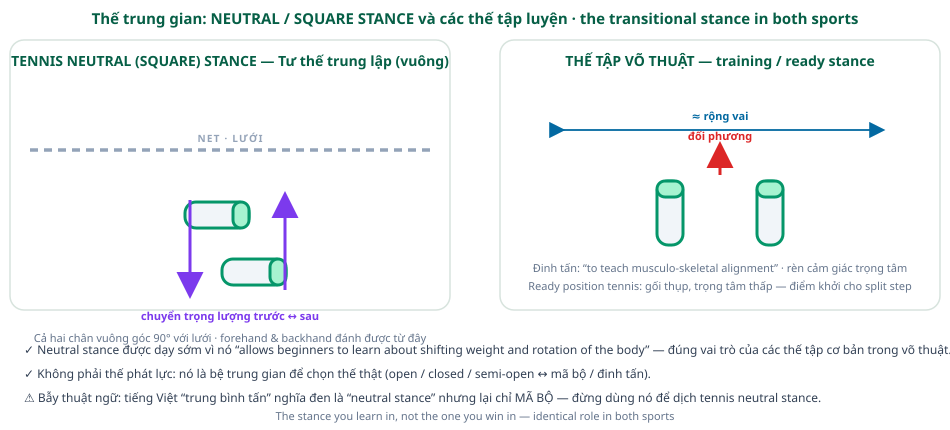

Stances: Martial Arts vs Tennis
Every martial art and every racket sport answers the same engineering question: where do the feet go, so the body can deliver force without falling over? This article lines up the two classic martial-arts stances — horse stance (mǎbù / kiba-dachi; Vietnamese: trung bình tấn) and front stance (zenkutsu-dachi; Vietnamese: đinh tấn) — against the three stances of tennis: open, closed, and neutral (square). The short answer: the horse stance is the structural twin of the tennis open stance, the front stance is the twin of the closed stance, and the neutral/square stance is the twin of the basic training stance in both sports.

Horse Stance ↔ Open Stance — the lateral, rotation-powered twins
Both stances put the feet side by side on a line across the target: the horse stance spreads them 1.5–2 shoulder widths apart, parallel to each other on one horizontal axis (the Vietnamese article measures it at roughly 1.5 shoulder widths; the English article gives about two shoulder widths for northern styles); the tennis open stance places the feet parallel to the net, pointing sideways, at the net, or diagonally toward it. In both, the base stays wide and still while the upper body rotates around the vertical axis.
The sources even describe the same mechanism in the same spirit. The Chinese horse stance “is a fighting stance which changes into front stance while using hip rotation to develop punching force”; tennis credits the open stance with “a high degree of torso rotation… sometimes likened to the coiling and uncoiling of a spring.” And both sources name the same price: the open stance “does not always allow for proper weight transfer and maintenance of balance” on powerful strokes — exactly the horse stance’s trade of lateral stability for forward drive.




Coaching takeaway: a player who has held mǎbù already knows the feeling of a wide, still base with the torso doing the work — the same sensation as loading a coiled open-stance forehand. The wide-leg conditioning of the horse stance (thighs parallel to the floor, in the southern Shaolin tradition) builds exactly the lateral strength the open stance lives on.
Front Stance ↔ Closed Stance — the forward-weighted, linear twins
Both stances commit the weight forward. In the front stance (đinh tấn, cung bộ), the rear leg is straight and “pushes the centre of gravity forwards, ensuring the full body weight is behind the strike,” while the bent front leg supports the body; the result is “a great deal of power generation forward, but very little in any other direction.” The tennis closed stance does the same in its own medium: the feet take a diagonal fore-aft alignment, and at contact “the rear foot [may come] completely off the floor with bodyweight being transferred entirely to the front foot.”
Both are also the uncommon stance in their sport’s daily use. The front stance’s linearity makes it primarily a training posture — its stated purpose is “to teach musculo-skeletal alignment” — and the closed stance is “the least commonly used of the three main stances,” mostly reserved for backhands.



Neutral (Square) Stance and the Training Stance
The neutral stance — also called the square stance — puts one foot ahead of the other, both feet aligned at 90° to the net. It is not a power stance; it is taught early because it “allows beginners to learn about shifting weight and rotation of the body.” That is precisely the role the front stance plays in the martial arts (“to teach musculo-skeletal alignment,” plus training the sense of balance and of the body’s centre of gravity), and the role of the tennis ready position: the low, knees-bent base the split step launches from.

Terminology Warnings — read before you translate
- “Open / closed” means opposite things in the two sports. In martial arts, an “open stance” is an orthodox fighter versus a southpaw; a “closed stance” is two fighters sharing the same lead. In tennis, open/closed describes the feet’s orientation relative to the net. Same words, unrelated meanings.
- “Square” is a false friend too. In martial-arts speech “square” suggests wide and stable; in tennis the square stance is the neutral stance — a narrow, transitional posture at 90° to the net.
- The Vietnamese names surprise English speakers. Trung bình tấn literally means “neutral stance” but denotes the horse stance; đinh tấn (“nail stance”) denotes the front stance. And the “horse” metaphor shows up on both stances in Vietnamese: some Vietnamese schools call the front stance Mã Tấn, and Wing Chun calls it Trực Tuyến; Phiên Mã (“straight-line turning horse”), after the đing-shaped footprint.
Sources
- Wikipedia — Horse stance (mǎbù, kiba-dachi, juchum seogi)
- Wikipedia — Front stance (zenkutsu-dachi, ap kubi)
- Wikipedia tiếng Việt — Trung bình tấn (Mã bộ, Kiba Dachi, Annin Sogi)
- Wikipedia tiếng Việt — Đinh tấn (Cung Bộ, Zenkutsu Dachi, Gunnun sogi)
- Wikipedia — Tennis § Stance (open, semi-open, closed, neutral)
- Wikipedia — Stance (martial arts) (analytical framework)
- Wikipedia tiếng Việt — Tấn pháp (stance framework)
Photo credits: every photo above is an actual figure used by the cited Wikipedia articles, retrieved from Wikimedia Commons. Mǎbù posture — public domain (own work), via Wikipedia: Horse stance. Motobu Chōki in kiba-dachi — Nakasone Genwa, Watashi no Karate-jutsu, public domain, via Wikipedia: Horse stance and Wikipedia tiếng Việt: Trung bình tấn. Asva vadivu — Ranjan Mullaratt, CC BY-SA 4.0, via Wikipedia: Horse stance. Gunnun sogi diagram — Vašek, CC0, via Wikipedia: Front stance. Shuri Castle photo — Nakasone Genwa, Karatedo Taikan, public domain, via Wikipedia: Front stance.
Stub notice: this page is a new, compact entry in the Footwork section — diagrams, source photos and the core comparison are complete; drill progressions and a deeper Vietnamese cross-training guide will follow. Updated 13 October 2026.
The Hitting Stance(s) | Footwork Home | Footwork: Ready Position